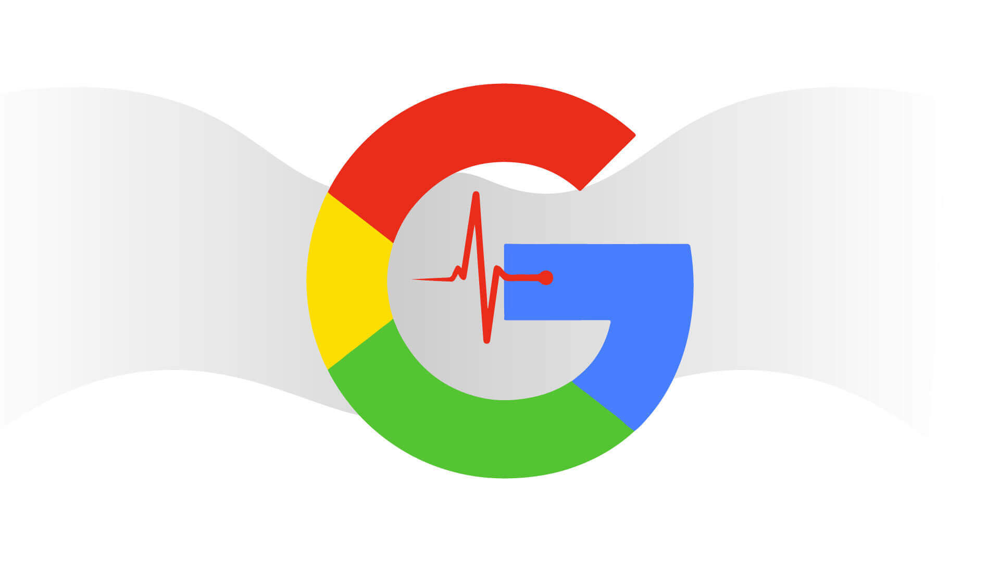

Core Web Vitals: More Than Just Speed
In the ever-evolving world of web development and SEO, Google's Core Web Vitals have become a critical benchmark for user experience. But they are about much more than just how fast your page loads. Let's explore the three pillars of Core Web Vitals and why they are essential for both your users and your search engine rankings.
1. Largest Contentful Paint (LCP)
LCP measures loading performance. To provide a good user experience, LCP should occur within 2.5 seconds of when the page first starts loading. This metric focuses on what matters most to the user: seeing the main content of the page appear quickly. It's not just about the first pixel; it's about the largest, most meaningful piece of content.
2. First Input Delay (FID)
FID measures interactivity. It quantifies the experience users feel when trying to interact with a non-responsive page. A good FID is less than 100 milliseconds. Have you ever clicked a button on a website and nothing happened for a moment? That's a poor FID, and it's incredibly frustrating for users.
3. Cumulative Layout Shift (CLS)
CLS measures visual stability. It looks at how much the content on your page shifts around unexpectedly as it loads. A good CLS score is less than 0.1. This prevents those annoying moments where you're about to tap a link, and an ad loads above it, pushing the entire page down and causing you to tap the wrong thing.
← Back to Blog